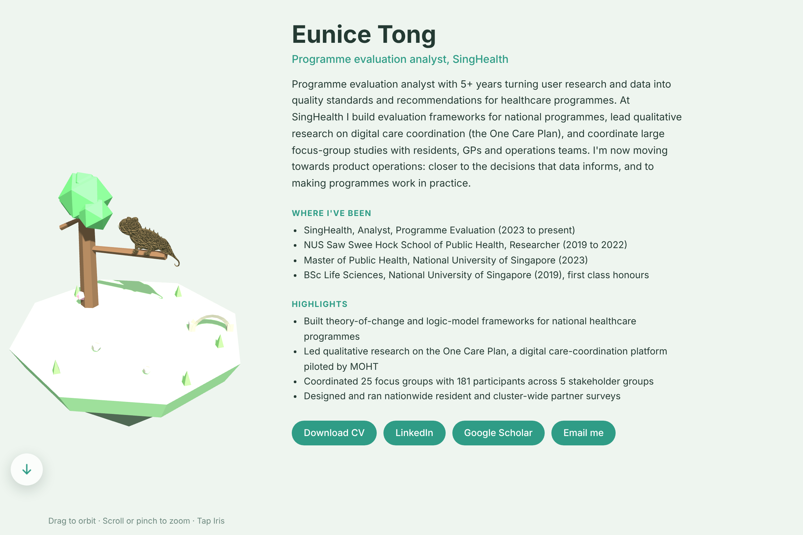
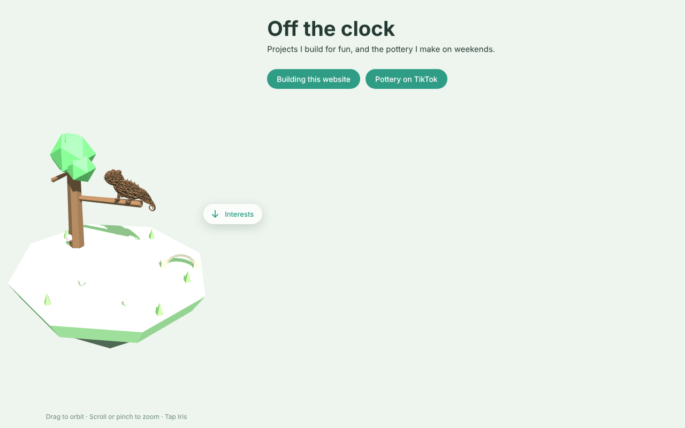

Creating this animation
How Iris changed over time, stage by stage, with the main changes in each. Built with Claude one change at a time.
-
Stage 1
The brief
I started with a short spec: a 3D animal you can drag to orbit, zoom with scroll or pinch, a slow spin after a few seconds of rest, a reaction when tapped, and a card with its name and traits. No external images, and it had to work on a phone.
I chose a chameleon on purpose, to reflect my work profile. A personality quiz read me as adaptable: I can take the lead on a project, I'm comfortable letting others take control, and I focus on getting the task done right.
Main items
- Tried a cat, a fox and a few other animals before settling on a chameleon.
- Set the look: soft lighting, a rounded body and a card with the name and motto.
Why I made these choices
I wanted something that showcased who I am. A chameleon has a clear silhouette and useful reactions, like colour, turning and the tongue, which a cat or fox wouldn't give me. The aim was a small companion that feels alive with no photos or downloads.
-
Stage 2
The first render that worked

The first version where Iris, the island and the tree all showed up.
Iris sits on the island beside a brown tree with one branch and a leafy top. The card is in the corner, and the arrow button at the bottom right makes him climb.
Main items
- A chameleon with a casque, eye turrets and a coiled tail.
- A tree with a trunk, one branch and a canopy.
- Drag, zoom, a slow spin after a few seconds, and tap reactions.
Why I made these choices
Before refining details, I wanted one complete scene to test the core idea: he lives on the island and the tree is the goal.
-
Stage 3
Climbing, sitting and sleeping
Bringing Iris to life
Iris learned to climb the tree, settle down, and eventually fall asleep. This stage focused on giving him more natural movements and behaviours, rather than keeping him in a single idle pose.
Main decisions
- Created a climbing path along the trunk, with Iris’s belly facing the bark.
- Adjusted his feet and legs to maintain contact with the tree.
- Added the transition from the trunk onto the branch.
- Introduced sitting after a short period of inactivity, followed by sleeping after a longer one.
- Animated his tail coiling as he sits and his eyelids slowly closing.
- Timed the ‘zzz’ animation to appear only after he falls asleep.
Intent
I wanted Iris to feel like a living companion, even when users weren’t interacting with him.
The climbing animation also had a purpose beyond movement. I wanted the tree to represent a transition between my professional life and personal projects, creating a physical separation between the two.
Challenges
Getting Iris to interact naturally with his environment was harder than expected. Early climbing animations made him look like he was floating or sitting inside the trunk, rather than gripping the bark.
The sleeping sequence also took several iterations. His eyelids moved up and down instead of closing naturally, and the ‘zzz’ appeared before he was actually asleep.
Why I made these choices
I refined his climbing path and repositioned his feet so he visibly grips the bark throughout the climb. Since chameleons are known for changing colour, I also incorporated colour changes into the animation.
For the sleeping sequence, I realised I needed to describe how sleep should look and feel, rather than simply instructing the AI to make him sleep. I added a slight lowering of his body when he sits, followed by gradually closing eyelids and, finally, the ‘zzz’.
What I learned
A convincing animation depends on more than getting individual movements right. Each action needs to happen in the right sequence, with the right timing and physical context.
I also realised that interactions work best when they carry meaning. The climb became more than a movement animation: it gave a visual representation to the separation I wanted to communicate.
-
Stage 4
Tap reactions
A tap makes him react in one of three ways: a jump with confetti, a turn to face another way with an annoyed look, or a head tilt with a question mark. He won't repeat the same reaction more than three times in a row.
Main items
- Jump with sparkles, turn, or tilt his head.
- An annoyed look that builds, holds, then fades after the turn.
- Turns of 90 and 180 degrees on the branch, so he stays on it.
Intent
I thought it would be cute to make him a bit more reactive, so a tap triggers different responses.
Challenges
Keeping the reactions varied without them feeling random or repetitive.
Why I made these choices
There are three reactions: a jump with confetti, a turn with an annoyed look, and a head tilt with a question mark. The limit of three in a row stops any one from becoming the default, and the turns stay on the branch.
What I learned
Small reactions add personality, but each one has to fit the scene it's in.
-
Stage 5
Refining the character
Getting the details right
This stage focused on making Iris look more recognisably like a chameleon while retaining his cute, cartoonish appearance.
The tail went through a major redesign, evolving from a simple tube into a tapered, scaled structure with a spiral tip. I also refined his body proportions, legs, feet and facial features.

The version before the site layout. Scales cover the body and tail, and the legs are longer and slimmer.

After a short rest on the ground, Iris settles with his tail and eyes changing.
Main decisions
- Changed the tail from a uniform tube to a gradually tapered shape.
- Added scales across the body and tail.
- Rebuilt the tail as one continuous structure to remove unnatural kinks.
- Refined the body into a compact, deeper shape with a larger head.
- Lengthened and slimmed the legs, adding clearer elbows and knees.
- Redesigned the toes into two opposing bundles to grip the branch.
- Restricted eye movement so the pupils remain visible.
- Added a tongue flick when he turns.
Intent
I wanted Iris to look more like a real chameleon without losing the playful aesthetic.
I started researching photographs of real chameleons to understand which physical characteristics made them recognisable. Rather than copying every anatomical detail, I wanted to identify the defining features and translate them into a stylised 3D character.
Challenges
The tail was particularly difficult to get right. I initially tried giving the AI exact numerical dimensions for different points along it. Instead of producing a natural taper, it created something resembling a series of barrels.
The tail also developed an unnatural kink when Iris was on the branch.
Another challenge was balancing realism with animation. As I made his anatomy more realistic, the movements needed to become more sophisticated to match. More detailed legs meant more complicated animations, which started to go beyond the level of complexity I wanted for this project.
Why I made these choices
I changed my approach to the tail. Instead of prescribing exact dimensions, I described the shape I wanted and the reasoning behind it, allowing the AI to work out the geometry.
To fix the kink, I eventually asked it to rebuild the tail as one continuous structure rather than patching individual sections.
For the rest of his anatomy, I decided to scale back the realism and keep the overall character stylised. For example, I restricted how far his eyes could rotate once the pupils would start disappearing, because that looked unnatural within the cartoon aesthetic.
What I learned
Describing the intended form and reasoning can be more effective than specifying values alone. A model can follow numerical instructions accurately and still produce something that looks wrong.
I also learned that consistency matters more than realism alone. Every part of a character needs to exist at roughly the same level of detail and realism. Making one feature more anatomically accurate doesn't necessarily make the overall character better.
-
Stage 6
The site

On the site, Iris sits on the left and the work profile is on the right while he's up the tree.
Last, Iris was moved onto my site. He sits on the left third of the page, and the profile on the right changes with where he is. The island is framed to fit the whole scene when the page opens, and he starts out on the branch.
Main items
- Iris in the left third, with the profile beside him.
- Above the branch, the work profile. On the ground, the personal side.
- The whole island in view on load, with Iris already on the branch.
Intent
Once he was moved onto the site, I wanted his movement down the branch to show a physical move from my work self and projects to my personal projects.
Challenges
Getting the profile to change at the same point as his movement.
Why I made these choices
He sits on the left third of the page, and the profile on the right changes with where he is: work while he's up the tree, personal on the ground.
What I learned
The animation can carry the meaning of the layout. When it moves with the content, the visitor sees the change without needing a label.
-
Stage 7
Switching quickly

The panel changes as soon as the arrow is pressed, while Iris is still on his way down the tree.
Main decisions
- Iris starts on the top branch, so the page opens on the work profile with no drop.
- A single arrow sits on the seam between the animation and the panel: down for Interests, up for Professional.
- The two panels slide up and down past each other instead of appearing and disappearing.
- Pressing the arrow mid-climb turns him round along the same route, so he doesn't have to finish first.
- The panel changes the moment the arrow is pressed, while Iris keeps moving.
Intent
People should be able to move between my work and personal sides quickly, and as often as they like. The click should clearly be what makes things happen, with the animation responding to it, not the other way around.
Challenges
The first version worked, but the page only changed once Iris had finished climbing. Switching a few times created friction, and the page seemed to lag behind the click.
Why I made these choices
Once the panel follows the press straight away, the page never waits for the animation. Letting the climb reverse mid-route means a second press always works, so nobody is stuck waiting. The sliding panels make it clear which way the page is moving.
What I learned
An interaction that works once can still feel broken when it's repeated. The response should be immediate, and the animation should follow the user rather than hold the page back.